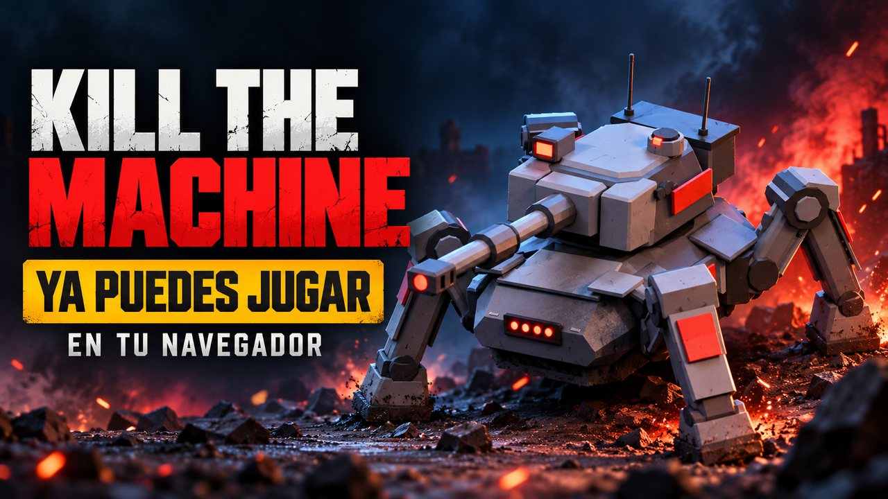
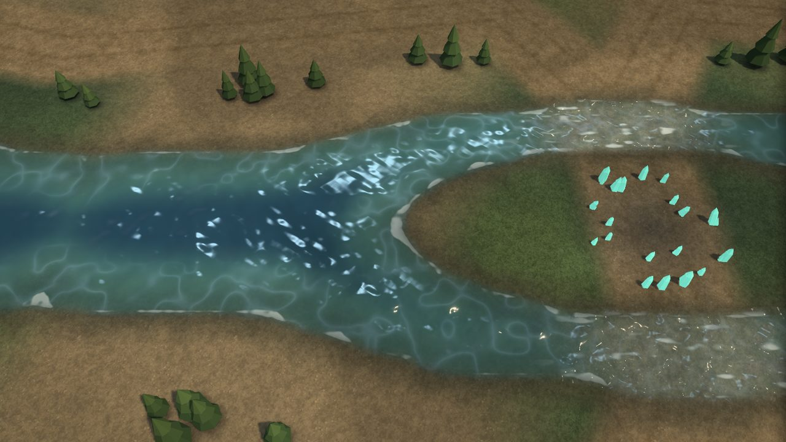
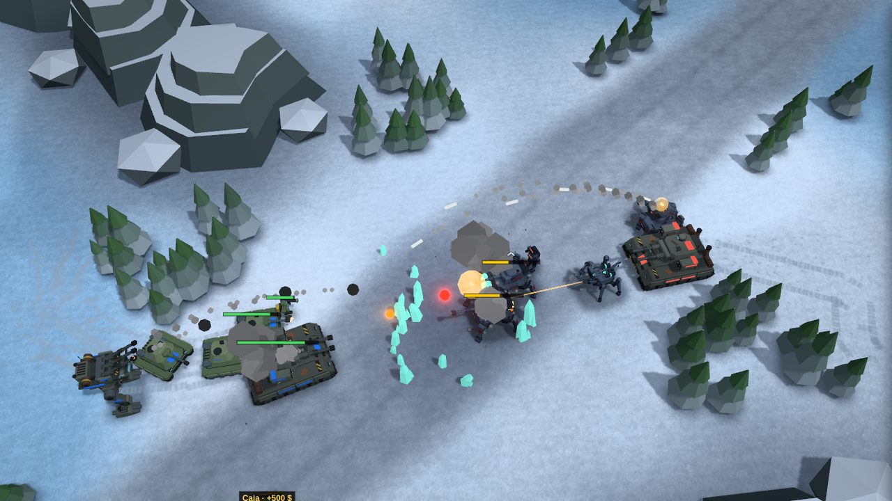
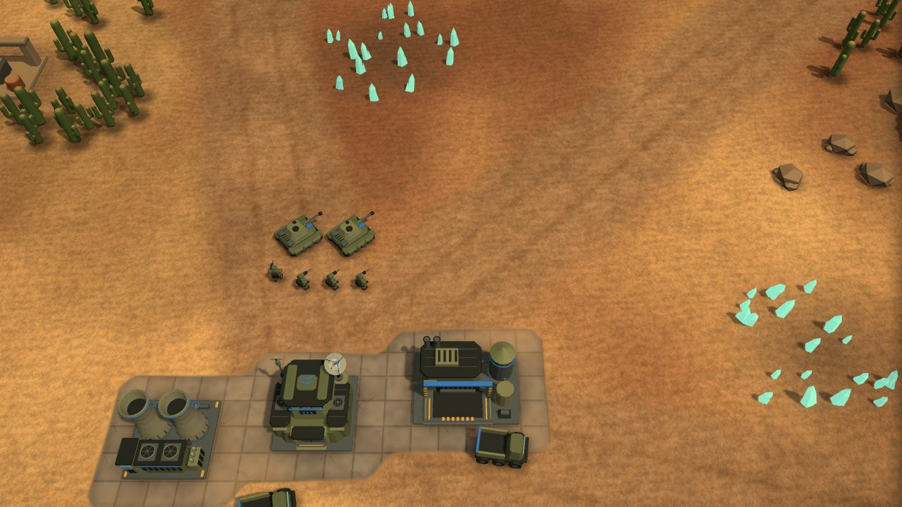

KILL THE
MACHINE
Estrategia en tiempo real al estilo de Command & Conquer que se juega en el navegador. Construye tu base, cosecha mineral y dirige a los humanos o a las máquinas en una guerra por el planeta.
Gratis y sin instalar nada. Necesita teclado, ratón y un navegador con WebGL (Chrome, Firefox, Edge o Safari recientes).
Parece que estás en un móvil o una tableta: para jugar hace falta un ordenador con teclado y ratón.

El juego
El año 2187. La red de máquinas despertó. Elige bando y enfréntate a la IA: gana quien destruya todos los edificios del rival.
Humanos
Tanques, infantería, artillería y cazabombarderos. El último comandante humano contra la red.
Máquinas
Drones, caminantes y arañas de plasma. Juega también con el otro bando y cambia la voz de mando.
Base y economía
Plantas de energía, refinerías y cosechadoras de mineral; cajas de dinero repartidas por el mapa.
Mapas y aspectos
Cuatro Vientos, Río Partido y Duelo del Paso, en terreno templado, desierto o helado.
Estructuras tecnológicas
Captúralas con ingenieros: mina de tibero, radar estratégico, fábricas de Mamuts y Juggernauts, misil nuclear y cañón de iones.
Apoyo aéreo
Ataque aéreo que persigue a las tropas y vuelo de reconocimiento para descubrir al enemigo.
IA con tres niveles
Fácil, Normal o Difícil. También puedes ver a la IA jugar contra sí misma.
Hecho para la web
Three.js, sin servidor ni instalación: la partida entera corre en tu navegador.
Capturas
Imágenes del juego tal como se ve en el navegador.



Controles
Los de siempre en un RTS. La lista completa está en el menú de pausa del juego (Esc).
| Seleccionar | clic · arrastrar una caja · doble clic (mismo tipo) · Ctrl+A todas |
| Mover y atacar | clic derecho · A + clic ataca moviéndose · S detiene |
| Cámara | flechas o bordes de la pantalla · rueda o Q E para el zoom · H vuelve a la base · Espacio última alerta |
| Grupos | Ctrl+1–9 crea · 1–9 selecciona (dos veces, centra) |
| Construir | barra lateral: clic construye, clic en «LISTO» coloca, clic derecho cancela, Shift ×5 |
| Edificios | R repara · Supr vende |
| Partida | Esc menú · P pausa · M sonido |
Novedades
Los últimos cambios publicados, tal como aparecen en el historial del repositorio.
- Cargando…